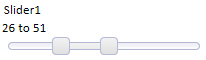

New Dialog Component
Table of contents
- New Dialog Component
- Introduction
- Use Cases for the Dialog Component
- Dialog Features
- Deciding whether to use a Dialog or a Grid
- Creating a Dialog from a Grid
- Using the Dialog Builder
- Dialog and other Properties
- Working and Live Preview
- Dialog Controls
- Containers
- Other Controls
- (Pre)Defined Controls
- Dialog Events
- Repeating Sections
- Multi-page Dialogs
- Binding a Dialog to a Database
- Embed other objects
- Dialog Methods
- Dialog Examples
- Videos
- See also
Introduction
The Dialog Builder allows you to build a form layout that allows you to collect values from the user. When the user submits the data you can do whatever you want with the submitted data. For example, you might store the data in a table. Or you might send an email with the submitted data.The Dialog Builder allows you to create 'repeating sections' which are ideal when you are creating forms that have one-to-many (i.e. master-detail) relationships. For example, you can use 'repeating sections' to create forms for invoices, expense reports, etc.
The new Dialog Builder has much more functionality and much better performance than the old (V10 and older) dialog builder.
Quick Start
- Create a new Dialog component from the Web Projects Control Panel
- Pick an appropriate template or start with a blank Dialog component
- Select the 'Controls' category, and then the 'Dialog Controls' sub-category.
- Add controls to the Dialog by clicking on the appropriate control type.
- Set the properties of each control you add.
- Typically, you will want to add a button to the dialog that submits the values to the server. You can create your own button, or select a pre-defined button.
- To select a pre-defined 'Submit' button, select the 'Controls' category, then the 'Defined Controls' sub-category. Then select the 'Submit-Reset' control. This will place a 'Submit' and a 'Reset' button on the Dialog.
- When you done adding controls to the Dialog, select the 'Events' category, and then the 'Server-side' sub-category. Define the 'afterDialogValidate' event to process the data that was submitted by the dialog.
Place a repeating section on the Dialog
- Select the controls that you want to repeat.
- Place a 'Container' control around these controls. (Select 'Controls', 'Containers'.)
- Set the 'Sub-Type' property to 'RepeatingSection'.
- You will probably want to turn off the line-break after each field in the repeating section.
What to do about your old dialogs
You may continue using any dialogs built with the old (V10 and earlier) dialog builder.If you right click on a legacy Dialog component in the Web Control Panel, there is a menu item that will allow you to convert the component to a new (V11) Dialog component. The new Dialog component in V11 offers significantly more functionality than the legacy Dialog component, and it is recommended that you migrate your legacy Dialogs to new Dialogs over time. The conversion will not do a perfect job of converting your legacy Dialog, but it will give you a good start.
You can also use the new Dialog builder to create fields from the existing tables, instead of converting an old Dialog.
You should use the new dialog builder for any new dialogs.
Use Cases for the Dialog Component
- Simple Web Forms, for example mailing-list subscriptions
- Multi-page Web Forms, for example surveys
- Single-record database entry and editing, for example a membership database
- Parent-child database editing that requires a single transaction, for example shipment invoices with invoice items
- Any data entry that should not or can not be immediately committed to a database, for example sales order entry on an occasionally connected mobile device.
Dialog Features
- Ajax web forms
- 6 input control types (text, checkbox, etc.) and 4 container types (tabs, frames, etc.)
- 6 other control types (buttons, images, etc.) and several predefined action controls (submit, etc.)
- Define repeating sections with variable numbers of rows
- Validate individual controls, whole forms, or all controls on the current tab
- Validate on the web browser client, the application server, and/or the database
- Perform immediate field validation if desired
- Define bubble help and/or pop-up help for each control
- Password and watermark text field styles
- Built-in Captcha form validation
- Text area can be a full-blown HTML editor
- Use calculated field expressions, show/hide expressions, enable expressions, and conditional styles
- Automatically calculate summary values for repeating fields
- Populate drop-down lists, edit-combo boxes, and auto-suggest lists statically or dynamically
- Optionally use JavaScript controls, for example jQuery UI widgets
- Optionally handle mouse and key events on a per-control basis
- Optionally apply security group permissions on a per-control basis
- Genie mode with optional progress reporting for multi-page dialogs
Deciding whether to use a Dialog or a Grid
The Alpha Five Grid component assumes that it has a data connection to a SQL or DBF database, and every control in the Grid binds to a database field. The Alpha Five Dialog component doesn't assume anything about data binding: each control is just a control, and if you want to load or save the contents of any control or of the whole dialog, you may.A single-record Grid form based on a database table and a dialog based on the same database table may wind up looking and acting almost the same. Beyond this area of overlap, however, the two components have different strengths and weaknesses.
A tabular Grid with a search part and an editable detail view provides a superior way to search, sort, and edit a database table. A tabular grid with a child table in a linked grid or row expander is an excellent way to deal with a two database tables with a one-to-many relationship and takes little or no code; its only serious drawback is that you can't easily commit the saving of the child records and the parent record in a single transaction.
A Dialog with a repeating section is another good way to deal with a two database tables with a one-to-many relationship. With this scheme you can commit all the fields and records in a single transaction, but you may have to write a little code to handle the data binding and the transaction. Or not: see Genies for New Dialog Component V11 and Server-side Action Scripting V11.
If the action you want to take after data entry is not a database operation, then a Dialog is probably a better choice for your application. For example, you may want to create a Dialog to capture signups for an event and email the results to the organizer. While that could be done with a Grid, there would have to be a database involved, which is not necessary if you use a Dialog.
If you have a large number of controls and want to break them up into pages and validate each page, the Dialog is a much better choice than a Grid. A typical use of this kind of dialog would be for an online survey form.
Creating a Dialog from a Grid
You can automatically convert a Grid component into a Dialog. To do so, right click on the Grid component in the Web Control Panel, and select Create Dialog component from this Grid component.This command can only be used on updateable (read-write) Grid components that have a Detail View, or Grids that use the 'Form' style layout.
In the case of a Grid with a Detail View, the controls in the Detail View are added to the Dialog component (the controls in the Grid part are ignored). In the case of a Grid that uses the 'Form' style layout, the controls in the Grid part are added to the Dialog component.
Why would you want to convert a Grid to a Dialog?
Many users have been using the Grid as a proxy for a data entry form. This is done by setting the Grid style to 'Form' and setting the 'Add records only' property of the Grid. While this works well in most cases, in the case where you have a large number of fields in the Grid, the Grid builder can be slow. A Dialog component is better suited to this type of application.Using the Dialog Builder
To invoke the Dialog Builder, go to the Alpha Five Web Projects Control Panel, select the Web Components view, and press New. Pick Web Component and press Next.Pick Dialog. (Not Dialog (Classic) in the Legacy section.) Press OK.
You will see the Select Dialog Component Template dialog. If there is a template shown that sounds like a good approximation of what you want to create, choose it. If not, start with a blank Dialog Component. In either case, you will see a new Dialog Builder. (Hover over the image to see it full size.)
Creating a Control
Select the Dialog|Controls pane. The Dialog Controls accordion should open automatically; if now, click on it. Click on your desired control. You will see a New Control dialog.If you want to creat a single control, fill in the name and label you want to give it, select the data type it should have, and select the appropriate options for label position, label justification, and whether there should be a line break after the control. Press OK.
Don't obsess about the options at this point, because you can change them all at any time.
Designer Tools
The Dialog|Controls pane has two tabs (chosen at the bottom): Tree View and Wysiwyg view. Tree View will open by default.You can design in either tab, and switch tabs freely. The Tree View is more compact and easier to navigate from the keyboard. The Wysiwyg view shows a much closer approximation of the final Dialog appearance.
Tree View
You can right click on a control in the tree-view to get a pick list of actions that can be performed on the control.
Wysiwyg View
Menu Actions
In either view, you can use the dialog menu to act on the controls in the dialog.The reason for recalculating controls is to update the generated HTML for the control. The HTML is generated whenever the control is edited and saved, and whenever you open a dialog created in an older build of Alpha Five, but there are times when you might want to force the HTML to be regenerated.
You can copy and paste controls to and from the clipboard; this allows you to, for example, create multiple sets of a group of controls in a matter of seconds. A typical use case would be the shipping and billing addresses for an order. This can also be used to reuse controls from one dialog in another.
If you want to reuse controls in the longer term, you can save them to and load them from a library. The library lives in the file system of your development computer, and is organized by control sets.
Libraries can be local to your Web Project, visible to all Web Projects in the current Alpha Five database (master project), or visible to all Web Projects on this computer. There is a system library as well but you can't save to it, only load from it.
Creating Multiple Controls at Once
In the New Control dialog, you can switch to multiple control mode by choosing the top right-hand radio button, labeled "Create multiple controls at once." In this mode you need to enter a list of control names, with optional control types. You can define rules for the labels for each control. Clicking on the "Assign unique names" link will examine all the names you have entered and resolve any duplication with existing names. Click on the "Show existing fields" link will display all the existing field names for the dialog.In the image below we have entered fields a through j. Clicking on "Assign unique names" added "1" to the ends of the duplicate names to make them unique. After doing that we clicked on "Show existing fields."
If you have a database table that has some or all of the fields you want in your dialog, you can base your field names on the table using the Populate list from a table link.
By placing multiple comma delimited controls on the same line in the dialog, you cause the Controls on the Dialog component to be created with no break after each control, other than the last control on the line. You can also specify the width of the control, by including a width directive in parentheses. The width directive uses CSS syntax. E.g. 2in, 300px, 20em, etc.
The Firstname and Lastname controls will be on the same line. City, State and Zip will also be on the same line. Company and Address will be 4 inches wide. Here is the Dialog created from the above definition:
Using the Property Dropper
Sometimes you will want to set a property value in multiple controls at once, rather than selecting an individual control, setting its property value, then selecting the next control, and so on....To set multiple properties:
- Give focus to a propery in the Property Grid. This is your 'source' value.
- Click the 'Set multiple properties' button.
- A pop-up dialog appears. Select the controls that you want to update.
- Click the 'Set Properties' button.
Note: The next time you bring up the 'Set multiple properties' dialog, the controls that you previously selected will still be selected.
Advanced users can edit code in the Xbasic pane of the dialog to copy and paste properties. Unlike the Grid control, the Dialog control will update the settings pane based on the contents of the Xbasic pane, when you switch panes.
Dialog and other Properties
Dialog Properties
| Class map | Specify how the abstract CSS class names used in this component map to physical CSS class names in your style sheets. |
| Resolve abstract CSS class names | Replace abstract CSS class names with physical CSS class names. This should only be un-checked if you are in development mode and you want to determine what the abstract CSS class name is for a particular element in the Dialog. |
| Style name | Click the button to select a new style, or edit the existing style. <ProjectStyle> means that the component will use the default style defined in the Web Project. |
| Style overrides | By default, the Tabs, Accordions, pop-up Windows, Lists (edit-combo, auto-suggest, etc.) are style using the selected component style. You can override the style for these elements. This might be necessary for certain styles where the default appearance for these elements do not work well. |
| Font size | Specify if the fonts in Components should be scaled to make the component larger or smaller. Select 'Medium' for no scaling (i.e. the fonts shown will match those defined in the style sheet). |
| Font scaling option | Specify which CSS classes should be scaled. If you choose All, the fonts in these classes will be scaled, in addition to the fonts in the CSS classes specific to the Style that you selected: BODY, TABLE, TH, TR, TD, UL, OL, LI, P, A, BLOCKQUOTE. |
| Label width | If a control's label is set to display to the left or right of the control, specify the default width of the label. Uses CSS syntax. e.g. '3in;'. All controls that have their label width set to '{Global.LabelWidth}' will inherit this value. |
Customization
| 'Reset Form' dialog message | This is the message is shown when the user clicks a button to reset the form contents. You can use <a5:r>...</a5:r> language tags in the message to translate the message into different languages. |
| 'Reset Form' dialog title | You can use <a5:r>...</a5:r> language tags in the title to translate it into different languages. |
| 'Reset Form' dialog icon | Customize the icon used |
| 'Reset Form' Yes button text | You can use <a5:r>...</a5:r> language tags in the message to translate the message into different languages. |
| 'Reset Form' No button text | You can use <a5:r>...</a5:r> language tags in the message to translate the message into different languages. |
Validation and Error Reporting
| Only validate edited fields | Should all fields be validated, or only fields that were edited? |
| Error style | Specify how field validation errors should be displayed. 'block' - under the field, 'inline' - next to the field, 'tip' - popup error when hovering over the field, 'icon' - display an error icon and show error when hovering over icon, 'global' - display all errors in a single location. Note: Fields in Repeating Sections automatically use the 'tip' error style. |
| Classname - field with error | Classname of the control that has the error. Leave blank for default class. |
| Classname - error message | Classname of the element in which the error is displayed. Leave blank for default class. |
| Classname - field with error when hovering over error message | When you hover over the error message (in the global space), or over the control that has the error, this class defines how the control that has the error is styled. This option is only displayed if the error style is Global. |
| Classname - error message (on hover over error message) | When you hover over the error message (in the global space), or over the control that has the error, this class defines how the control that has the error is styled. This option is only displayed if the error style is Global. |
| Error icon | Icon to indicate field has an error. To use a built-in image use the syntax: images/BuiltInImageName.png.a5image |
| Show Dialog validation errors in popup-window | If a Dialog validation error occurs, specify if the error should be show in a popup-window. Note: Dialog validation errors are distinct from field validation errors. Dialog validation errors are defined in the 'DialogValidate' server-side event. |
| Error messages popup-window title | Specify the title for the popup-window. Only displayed if "Show Dialog validation errors in popup-window" is checked. |
| Show message on Dialog if has field validation errors | If any fields have validation errors, show a message on the dialog to indicate that there were errors. Only shown if the error style is not Global. |
| Field validation error message | Specify the message to show on the Dialog if any field has a validation error. This message will indicate that the Dialog has errors, but the actual error message will be shown next to the field. Only shown if the error style is not Global and "Show message on Dialog if has field validation errors" is checked. |
CSS
| A5Container class padding | Every control is wrapped in a div with the class of 'a5container'. The padding specified here is the minimum space between adjacent controls. Use CSS syntax to specify padding. e.g. 10px, .1in, etc. |
| Local CSS definitions | Define any local CSS classes. |
| Additional styles | Specify if any other styles (in addition to the primary style for the component) must be included. Enter a comma delimited list of style names. e.g., GlassOlive,Airport |
| CSS Linked files | Specify any CSS files that should be linked (in addition to the primary style for the Component). Enter a comma delimited list of filenames. |
Arguments
Define arguments. Arguments can be bound to page, session and cookie variables. Argument values are passed into all server-side Xbasic event handlers in the component.Javascript
Specify any Javascript files that should be linked. Enter a comma delimited list of filenames.Other
| Language definitions | Define strings for different languages. |
| Active language | Specify the active language to use for translatating strings tagged with <a5:r>..</a5:r> tags. Setting the property here is useful for for testing purposes. In a real application you can set the 'session.protectedactiveLanguage' variable to specify the active language. To select the default language, enter <Default> or leave this property blank. |
| Date format | Specify the format that the user must use for entering date values. |
| Switch year | Leave blank to use the default value of 20. If the user types in a 2 digit year that is above the switch year, the year is assumed to be in 1900. |
| Date picker - day names | Specify the names of the days of the week to be shown when the pop-up date picker is used. First entry is list is Sunday. Enter a comma separated list. TIP: You can also set the day names in this special session variable: session.protecteddatePickerDayNames |
| Date picker - first day of week | Specify the first day of the week. 1=Sunday, 2=Monday, etc. IMPORTANT: Regardless of what value you set here, if you customize the day names, the list of day names always starts with the name for Sunday. |
| Date picker - month names | Specify the month names to be shown when the pop-up date picker is used. Enter a comma separated list. TIP: You can also set the month names in this special session variable: session.protecteddatePickerMonthNames |
| Date picker - 'Today' button text | Specify the text for the 'Today' button. You can tag the text with <a5:r>...</a5:r> for automatic language translation. |
| Date picker - 'Close' button text | Specify the text for the 'Close' button. You can tag the text with <a5:r>...</a5:r> for automatic language translation. |
| Client-side Xbasic | Define client-side Xbasic functions. When the Dialog is running in Working Preview mode (or on the Desktop), you can respond to HTML events with Xbasic functions (in addition to Javascript functions). |
| Head section tags | Specify any tags you want to appear in the HEAD section of the page that hosts this component. |
| Help Table definition | Define the source for the Help text displayed in this dialog. |
| Field help window style | Specify the the type of window in which Field Help is shown. |
Data Binding
Compute data binding code at design time: Only check this option if you have a very large dialog that loads very slowly at run-time.Advanced
Other properties: Allows you to set properties in Xbasic code, which is most useful for properties not exposed in this property grid or in arguments.Working and Live Preview
Like the Grid, the Dialog component can be tested in both Working Preview and Live Preview modes. Working Preview runs on the desktop in a single thread, which means that debug(1) Xbasic statements cause a break. Live Preview uses the Application Server and a hosted browser window.You can also preview a Dialog component in an installed Web browser as long as the Application Server is running. Use the browser dropdown on the Web component toolbar to run this component in the browser of your choice.
Dialog Controls
Common control properties
Field Properties
| Variable name | Must be unique |
| Type | Data type:Character, Numeric, Date, Time, Short-time, Logical, or Guid |
| Treat field as a Logical field | If the field is a Numeric (Integer) field, and it contains only values of 0 or 1, then you can treat it as a Logical field and set the control type to a Checkbox. |
| Default value | Specify the default value for the control. The default value can be a value, an expression (start expression with = sign), a session variable (e.g. session.name), a page variable (e.g. pageVariable.name), or an argument (e.g :arg1). |
| Blank default if variable not found | If the pageVariable or session variable referenced in the Default Value expression is missing, set the default value to a blank value. Only shown if the default value is a reference to a session or page variable. |
| Validation Xbasic | Specify Xbasic code to test if the data in this field is valid. By default, only dirty fields are validated. You can specify that all fields should be validated in Update Settings, Editing Properties. |
| Validation rules | Specify rules to test if the data in this field is valid. By default, only dirty fields are validated. You can specify that all fields should be validated in Update Settings, Editing Properties. |
| Immediate validation | Specify if the value in the field should be validated as soon as you tab out of the field, or in the case of radio button, dropdown or checkbox controls, as soon as you change a value. The 'server-side' option will generate an Ajax callback, so you should try to limit the number of fields that require real-time server-side validation. Options are Client-side only,Client-side and server-side, or None. |
| Validation Javascript | Specify Javascript to validate the data in the field. Client-side validation is very fast because it does not involve making an Ajax callback to the server. Only shown if "Immediate validation" is not "None". |
| Class | Specify the class name for the control. <Default> will use the default class name for the style name selected. |
| Style | Specify the in-line style for the <input> tag. |
| Break | Force a column break before, after, or both before and after this control. |
| Break height | Specify the vertical distance between this control and the next control. Use CSS syntax. e.g. 10px, .5in, 20pt. |
| Horizontal spacer | Specify the horizontal space between this control and the next control. Use CSS syntax. e.g. 10px, .5in, 20pt. |
| Hide | Specify if this control should be hidden. Controls are typically hidden so that they can be manually placed into the Dialog HTML in a 'Free-form Container'. |
| Has help | Specify if there is help for this field. The help will appear in a window when the user presses F1. The Help text is read from a database. Go to the Properties pane to configure the Help database source. The Help Window style can either be a pop-up window or a dropdown window. To configure the Help Window style, go to the Properties pane and set the 'Field help window style' property. |
| Help ID | Specify the Help ID. The help text for this field is looked up in the Help table using this ID as the key. Only shown if the control has help. |
| Show help icon | Specify if an icon should be displayed next to the control to indicate that help is available for this control. Only shown if the control has help. |
| Help icon | Specify the icon to show next to the field control. Clicking, or hovering over this icon will show the help text for the field. Only shown if the control has help and shows a help icon and the icon position is not 'None'. |
| Help icon behavior | Specify the action when the user clicks the help icon, or moves the mouse over the help icon. Only shown if the control has help and shows a help icon and the icon position is not 'None'. |
| Captcha form validation | Specify if a Captcha image should be displayed for this control. The user will need to enter the text shown in the Captcha image in order to submit the Dialog. Only shown for Textbox controls. |
| Number of characters | Specify the number of characters to display in the Captcha image. Only shown if Captcha form validation is checked. |
| Image height | Specify the height (in inches) of the Captcha image. Only shown if Captcha form validation is checked. |
| Image width | Specify the width (in inches) of the Captcha image. Only shown if Captcha form validation is checked. |
| Refresh icon | Specify the icon for the 'Refresh' button. This is the button that the user can click to get a new Captcha image if the text in the current image is too hard to make out. Only shown if Captcha form validation is checked. |
| Refresh icon help | Specify the bubble help for the refresh icon. Only shown if Captcha form validation is checked. |
| Captcha error text | Specify the error text to show if the user does not enter the correct text into the Captcha control when submitting the dialog. Only shown if Captcha form validation is checked. |
| Initial focus | If checked, the control will have focus when the Dialog is shown. If you check this on multiple controls, the first control in the dialog that has this checked will get the focus. |
Field Label
| Label | Text to display in the field label |
| Bubble help | Specify the bubble help for this label |
| Class | Specify the CSS class name for the field label. |
| Style | Specify the in-line CSS style for the field label. |
| Position | Above, Left, Below, Right, or None |
| Width | Label width |
| Alignment | Left, Right, or Center |
Show/Hide (Server Side)
| Show/hide expression | Specify the show/hide expression. The show/hide expression can refer to session variables, or arguments (defined on the Properties pane). The control is shown if the expression is true. If the expression is false, or invalid (perhaps because a referenced session variable has not been yet been defined), the control is not shown. Example expressions: session.var1="alpha", :argument1 = 2 |
Client Side Properties
| Client side formatting | Specify if the textbox has client side formatting, such as a mask or a custom display format |
| Format type | Mask, Number or Custom (depending on variable type) |
| Format definition | Specify the client side format |
| Calculated field expression | Define a calculated field expression. The calculation is done in the Browser (i.e. on the 'client side') using Javascript. |
| Show/hide expression | If the expression evaluates to true, the control will be shown, othewise it will be hidden. The calculation is done in the Browser (i.e. on the 'client side') using Javascript. |
| Enable expression | If the expression evaluates to true, the control will be enabled. The calculation is done in the Browser (i.e. on the 'client side') using Javascript. |
| Readonly expression | If the expression evaluates to true, the control will be readonly. Subscription feature |
| Conditional style | Specify if the style for the cell that contains this control is computed, based on the values of the fields in the row. Note: You can also define conditional styles at the row level (see Properties page). For example, you might want to display a cell with a red background if a value in the row is outside a certain range. Note: The calculation is performed in the Browser using Javascript. Contrast with 'server-side' conditional styles in the 'Display Settings' section. |
Security
| Security Groups | Select which security groups can see this object. If no groups are selected, all users can see the object. |
Data Binding
These properties are used by the table-creation and data-binding Genies, and some of the server-side action scripts.| Updateable | Control is only bound to a field if this is checked |
| Table Alias | Abstract table name to use for storage; alias is mapped to a real SQL or DBF table |
| Field Name | Field name in the table |
| Field Definition | Data type and length of the field used for storage |
Textbox
| Maximum length | Specify the maximum number of characters that can be entered into the control. Set to -1 if there is no maximum. |
| Bubble help | Specify the bubble help for this field |
| Display format | Specify how this field should be formatted |
| Control Javascript | Specify any Javascript code that should be emitted for this control. You can use the special {Dialog.ControlId} and {Dialog.ControlIdEscaped} placeholders to reference the control's Id. This is an advanced feature typically used by developers who are using a 3rd party Javascript library, such as JQuery, to style a control using Javascript. See also: Grid and Dialog Component jQuery Date Picker V11 |
| Password | Is this a password field? Only shown for character fields. |
| Watermark | Specify the watermark text. Set to <FieldLabel> to use the field label as the watermark text. |
| Watermark class name | (Optional) Specify the CSS class name for the watermark text. Leave blank to use default class. This class is applied on top of any existing classes. Only shown if Watermark is checked. |
| Watermark style | (Optional) Specify the CSS style for the watermark text. Only shown if Watermark is checked. |
The Display Unformat property has been removed as it was not needed, since the data can be unformatted in the DialogValidate event. For example,
e.dataSubmitted.amount = stritran(e.dataSubmitted.amount,"(Dollars)","")
e.dataSubmitted.amount = stritran(e.dataSubmitted.amount,"(Dollars)","")
Date/Time Picker Properties (Also used for embedded Calendar control)
| Date/Time Picker | Show a 'DatePicker' icon which can be clicked to open a calendar. Users can click in the calendar to enter date values. |
| Open how | Specify how the date picker will be opened. Can either be when user clicks the icon, or when user clicks in the field. (Not shown for embedded Calendar control.) |
| Date format | Specify the date format in which dates will be returned when the user makes a selection from the Date Picker. If you specify <Default>, the format is controlled by the 'Date format' property in the 'Miscellaneous' section on the Grid Properties tab page. The <Default> setting allows you to easily configure the Grid to use US formats for users in the U.S.A and 'day/month/year' formats for users outside the US. |
| Switch year | Specify how the date picker will interpret 2-digit years. IMPORTANT: If you want to define how the server will interpret 2-digit years, you must set the Switch year in the Grid Properties, Miscellaneous section. |
| User must select from Date/Time picker | Specify if the user can type in a date/time value, or must select the value from the Date/Time picker. If this option is checked, then the Date/Time picker is automatically set to open when the control gets focus. |
| Low date | Specify the lowest date value that the Date/Time picker will show. You can compute this value dyamically using a Javascript function that gets called when the Date/Time picker is opened. |
| High date | Specify the highest date value that the Date/Time picker will show. You can compute this value dyamically using a Javascript function that gets called when the Date/Time picker is opened. |
| Disabled days | Specify disabled days in the calendar. Enter a comma delimited list. e.g. 0,6 to disable dates on Sunday and Sayurday. 0=Sunday, 1=Monday and so on. You can also enter: function:yourFunctionName if you want to define a Javascript function to dynamically return a comma delimited list of disabled days. |
| Show days of week | Specify if the days of the weeks should be shown as column titles on the Date/Time picker. |
| Show weeks of year | Specify if the week of the year for each week shown on the calendar should be shown. The week of the year is displayed in the first column on the calendar. |
| OK button label | When the Date/Time picker displays a time portion, the window has OK and Cancel buttons. Specify the label of the OK button. You can use language tags - <a5:r> and </a5:r>. |
| Cancel button label | When the Date/Time picker displays a time portion, the window has OK and Cancel buttons. Specify the label of the Cancel button. You can use language tags - <a5:r> and </a5:r> |
| Lock column widths | Specify if all columns widths should be the same, or can be different. Only meaningful when day names are of different lengths. |
| Draw boxes around dates | Allows you to put the individual dates in a box - see image below |
| Date item hover class name | Class name for when the mouse is hovering over a date |
| Date item selected class name | class name for the selected date |
| Date item out of range class name | Class name for dates that are not in the current month - can use this to hide days at the start and end of the range of displayed dates that are in the previous and next month. |
| Date item style | Can use this to change the size of the date cells - see image below |
| Has events | Specify if you want to define event handlers for the various events raised by the Date Picker. The event settings that follow are only displayed if this is checked. |
| onItemDraw | Specify the name of a Javascript function that gets called when each date is drawn on the Date Picker. The Javascript function prototype has these arguments: ele,date,type. ele - id of the element being drawn. Your function will typically set the .innerHTML property of this element. date - the Javascript date value of the element being drawn. type - can be 'date', 'month' or 'year' depending on what part of the Date Picker is being rendered. |
| onClick | Specify the name of a Javascript function to call when the user clicks on the Date Picker. The Javascript function prototype has these arguments: date. date - the Javascript date value that the user clicked on. |
| onRightClick | Specify the name of a Javascript function to call when the user right-clicks on the Date Picker. The Javascript function prototype has these arguments: date. date - the Javascript date value that the user right-clicked on. |
| onSelect | Specify the name of a Javascript function to call when the user selects an item on the Date Picker. The Javascript function prototype has these arguments: date. date - a Javascript date value. |
| onNavigate | Specify the name of a Javascript function to call when the user navigates in the Date Picker. The Javascript function prototype has these arguments: date. date - a Javascript date value. |
| onMonthNavigate | Specify the name of a Javascript function to call when the user navigates in the Date Picker. The Javascript function prototype has these arguments: date. date - a Javascript date value. |
| onYearNavigate | Specify the name of a Javascript function to call when the user navigates in the Date Picker. The Javascript function prototype has these arguments: date. date - a Javascript date value. |
Textarea
| HTML editor | Specify if the control has an HTML editor. (HTML editor allows you to set fonts and colors for your text and to use other HTML features such as tables, ordered and un-ordered lists, etc.) |
HTML Editor
| HTML editor width | Specify the editor width. Use CSS style syntax. For example: '6in', '100px' etc. |
| HTML editor height | Specify the editor height. Use CSS style syntax. For example: '6in', '100px' etc. |
| HTML editor is popup | Specify if the HTML editor is always 'live', or if the user must click in it, or on the 'Click to edit' hyperlink before it enables editing. |
| Popup editor width | Specify the width for the popup editor. If width is blank uses same size as the initial display. Use CSS style syntax. For example: '6in', '100px' etc. |
| Popup editor height | Specify the height for the popup editor. If height is blank uses same size as the initial displayt. Use CSS style syntax. For example: '6in', '100px' etc. |
| Save data when closing popup editor | Specify if the data in the Dialog should be saved when the popup editor is closed. Normally the data is not saved when the popup editor is closed. |
| HTML editor style | CSS style override |
| Has 'Click to edit' button | If the HTML editor is a popup editor, by default, clicking on the control causes the editor to pop up. However, if you have enabled 'File upload' then you will want to be able to download linked files by clicking on them. If you check this property, an 'Edit' hyperlink will be shown. Clicking on the HTML editor will not cause it to pop-up, but instead will allow you to download linked files. You will need to click on the Edit hyperlink to edit the HTML. |
| Edit hyperlink text | Specify the text for the edit hyperlink. When you click this hyperlink the HTML editor pops up so that you can edit the text in the field. |
| Allow image upload | Specify if the user can upload images to the server when editing this field. The uploaded images are inserted into the body of the memo. |
| Upload folder | Specify the folder where the uploaded images are stored. Enter a relative folder name. The folder is in the webroot. For example if you enter 'images' here, and the webroot is c:\a5webroot\project1, the physical folder where the images will be stored is c:\a5webroot\project1\images.VERY IMPORTANT: If you have the Security Framework turned on, be sure to set the appropriate permissions for this upload folder and the files that it contains. |
| Image upload dialog customization | Specify how the Image Upload dialog should be customized. |
| Allow file upload | Specify if the user can upload files to the server when editing this field. The uploaded files are inserted into the body of the memo as hyperlinks. |
| Upload folder | Specify the folder where the uploaded files are stored. Enter a relative folder name. The folder is in the webroot. For example if you enter 'uploadedFiles' here, and the webroot is c:\a5webroot\project1, the physical folder where the files will be stored is c:\a5webroot\project1\uploadedFiles. VERY IMPORTANT: If you have the Security Framework turned on, be sure to set the appropriate permissions for this upload folder and the files that it contains. |
| File upload dialog customization | Specify how the File Upload dialog should be customized. |
Plain text area (not HTML Editor)
| Bubble help | The bubble help for the text area. |
| Rows | The number of rows for the text area. |
| Columns | he number of columns for the text area. |
| In-line style | Specify style attributes that override the settings inherited from the style sheet. |
| Watermark | Specify if the field has a watermark. The watermark text appears in the text area when there is no value in the text area. |
| Watermark text | Specify the watermark text. Set to <FieldLabel> to use the field label as the watermark text. |
| Watermark class name | (Optional) Specify the CSS class name for the watermark text. Leave blank to use default class. This class is applied on top of any existing classes. |
| Watermark style | (Optional) Specify the CSS style for the watermark text. |
Lookups for text boxes and areas
| Lookup | Lookup data in another Grid, Table, variable, or static data source. |
| Lookup type | 'Grid Component' - shows a 'Lookup' link next to the field. Users can click this link to open another window which displays a Grid component from which they can select the value for this field. 'Auto-Suggest List' - as users start typing, a list of suggestions is shown. 'Edit-Combo List' - users can either type in a value, or click a button to show a drop-down list with choices. |
| Lookup definition | Click the smart field button to define the lookup. |
Auto-suggest lookup builder.
Dropdownbox
| Choices | Specify the choices that appear in the DropDownBox. It is possible for the stored value to be different from the displayed value. |
| Maximum choices | Specify the maximum number of choices to show. Set to 0 to show all choices. |
| Height | Specify the height of the box. If height is 1, then box appears as combo box. If height is greater than 1, then box appears as a list box. |
| Multi-select allowed | Specify if user can select more than one choice |
| In-line style | Specify style attributes that override the settings inherited from the style sheet. |
| Not in list rule | If the value in the field is not in the list of choices for the dropdownbox, should the current value of the field be added to the list of choices in the dropdownbox? |
RadioButton
| Choices | Specify the choices for the group of radio buttons. Each choice will be the label of a radio button in the group. It is possible for the stored value to be different from the displayed value (label). |
| In-line style | Specify style attributes that override the settings inherited from the style sheet. |
| Orientation | Are the radio buttons laid our vertically, horizontally, or in columns? If in columns, you can specify the 'snaking' style - Left-to-Right-Top-to-Bottom (LRTB), or Top-to-Bottom-Left-to-Right (TBLR). |
| Column flow | Specify how the choices are organized. LRTB - left-to-right, then top-to-bottom. TBLR - top-to-bottom, then left-to-right. Only shown if the orientation is "Columns". |
| Column count | Specify how many columns should be used to display the radiobutton choices. Only shown if the orientation is "Columns" and the column flow is "LRTB". |
| Row count | Specify how many rows should be used to display the radiobutton choices. Only shown if the orientation is "Columns" and the column flow is "TBLR". |
| Maximum choices | Specify the maximum number of choices to show. Set to 0 to show all choices. |
| Not in list rule | If the value in the field is not in the list of choices for the radiobutton, should the current value of the field be added to the list of choices in the radiobutton? |
CheckBox
| Choices | Define the choices for the check boxes. If the variable is Logical, then there can only be one check box. |
| In-line style | Specify style attributes that override the settings inherited from the style sheet. |
| Orientation | Are the check boxes laid our vertically, horizontally, or in columns? If in columns, you can specify the 'snaking' style - Left-to-Right-Top-to-Bottom (LRTB), or Top-to-Bottom-Left-to-Right (TBLR). |
| Column flow | Specify how the choices are organized. LRTB - left-to-right, then top-to-bottom. TBLR - top-to-bottom, then left-to-right. Only shown if the orientation is "Columns". |
| Column count | Specify how many columns should be used to display the CheckBox choices. Only shown if the orientation is "Columns" and the column flow is "LRTB". |
| Row count | Specify how many rows should be used to display the CheckBox choices. Only shown if the orientation is "Columns" and the column flow is "TBLR". |
| Maximum choices | Specify the maximum number of choices to show. Set to 0 to show all choices. |
| Not in list rule | If the value in the field is not in the list of choices for the CheckBox, should the current value of the field be added to the list of choices in the CheckBox. |
Buttons
Buttons may be added from Other Controls or as (Pre-)Defined Controls. By default, they will be simple text-only buttons that may have a class and/or inline style applied. You may also check Advanced Button Styling to create buttons that may have graphics and/or text.
Slider
| Width | Specify the width of the slider control. Use CSS syntax. E.g. 6in, 300px. |
| Minimum value | Specify the minimum value of the slider. |
| Maximum value | Specify the maximum value of the slider. |
| Step | Specify the amount by which the slider value increases when you drag on the handle. |
| Two value | Specify whether the slider sets a single value or two values (a start and end value). If you check this box, the control value will be set to a string like this: 23..45. The value to the left of the double periods is the start of the range and the value to the right of the double periods is the end of the range. |
| Show slider message | Specify if a message should be shown when the user is dragging on the slider. |
| Slider message | Specify the message that should be shown when the user is dragging on the slider. The message can use HTML markup. You can use placeholders in the template to indicate the value of the slider. You can also specify a Javascript function to compute the message text. |
| Hide slider message when focus lost | Should the slider message fade from view when the mouse is no longer over the slider. |
| Slider message position | Specify where the slider message should be positioned relative to the slider. |
| OnChange event | Specify the name of a Javascript function to call when the slider is dropped at a new position. NOTE: You specify the name of a Javascript function here, not the actual Javascript code. |
| OnSlide event | Specify the name of a Javascript function to call when the slider is moved position. NOTE: You specify the name of a Javascript function here, not the actual Javascript code. |
Choice lists for drop downs, radio buttons, and checkboxes
Choice lists can be defined by a static list of values, a list dynamically computed from a database, or from a variable.Static choice list.
Dynamic choice list. Note the option for cascading choices. Cascading choices are ideal for searching hierarchically organized data, such as Country, State/Province, and City.
Choice list bound to a variable.
Label
A label control, which displays text in a read-only form, has only the properties common to all controls. That includes having a field label. Use a label control when you want to display a dynamically-determined value that the user should not edit directly, such as a calculated field. You can also use a label control for indirect input, for example with an OnClick action that sets the field from a pop-up JavaScript control or an Ajax callback.Hidden
A hidden control type, which holds but does not display data, has only the properties common to all controls. Use a hidden control to hold a value that the user should not see, but needs to be submitted with the the rest of the dialog. To make it appear the way you expect, set its field label position to None.A hidden control type may not be necessary to your application, as you can hide any control type, and define client-side and server-side show/hide expressions for any control type.
Validating Individual Controls
To review, each control has the following four properties:| Validation Xbasic | Specify Xbasic code to test if the data in this field is valid. By default, only dirty fields are validated. You can specify that all fields should be validated in Update Settings, Editing Properties. |
| Validation rules | Specify rules to test if the data in this field is valid. By default, only dirty fields are validated. You can specify that all fields should be validated in Update Settings, Editing Properties. |
| Immediate validation | Specify if the value in the field should be validated as soon as you tab out of the field, or in the case of radio button, dropdown or checkbox controls, as soon as you change a value. The 'server-side' option will generate an Ajax callback, so you should try to limit the number of fields that require real-time server-side validation. Options are Client-side only,Client-side and server-side, or None. |
| Validation Javascript | Specify Javascript to validate the data in the field. Client-side validation is very fast because it does not involve making an Ajax callback to the server. Only shown if "Immediate validation" is not "None". |
Validation Xbasic is the most flexible server-side validation method.
function validate_a as p (e as p) 'Sample validation function. 'Data for the current row is available in 'e.data'. 'For example, e.data.firstname, e.data.lastname if e.data.a = "" then validate_a.hasError = .t. validate_a.errorText = "a cannot be blank." end if end function
Validation rules offer an easier server-side validation method that usually suffices.
Validation JavaScript with client-side immediate validation provides the user with validation feedback as soon as she has completed input of the field.
/* Use 'data' to refer to the value in the control. 'data' is a string variable. To convert data to numeric or logical value you can use these Javascript functions: $u.s.toNum(STRING as string) - convert to number $u.s.toBool(STRING as string) - convert to logical If the validation fails, your code should return the error message. Otherwise, it should return false. Example: */ var dataN = $u.s.toNum(data); if(dataN > 10) { return 'Quantity must be less than 10'; } else { return false; }
Defining Help for Controls
You can define help for controls by enabling help and giving the control a help ID. You can browse the help table for the ID or create and edit a new ID. You can control whether and where a help icon displays near the control, and whether it triggers on a mouse click or a mouse-over event. If you don't display an icon, pressing F1 with the focus inside the control will bring up help.Here the default help icon is displayed to the right of the text box control.
Clicking on the icon brings up the help window.
The help source is a database table. If you don't already have an appropriate table, Alpha Five can make one for you.
Control Events
Every Dialog control supports the full range of JavaScript mouse and keyboard events.Containers
The tab, accordion, frame, container, and free-form layout containers are each useful for a slightly different purpose. Hover over each image to see it full-size: the differences will be visually obvious.For demonstration purposes, we based the dialog for these examples on the Alphasports customer table.
Tab Control
Tabs and accordions are different settings of the same control. Let's start with tabs.Designing a tabbed dialog
Tabbed dialog preview
Tabbed dialogs can be turned into multi-page dialogs, as we discuss below.
Accordion Control
After switching a tabbed dialog to an accordion
Accordion dialog preview
Frame
Framed dialog design. Note that breaks have been removed from the frame ends. This allows for a liquid layout that will flow the form frame by frame, keeping related content together.
Framed dialog preview. Note the wide horizontal flow from the removed breaks
The same framed dialog in a narrow browser, similar to a smart phone form factor. Note how the frames automatically moved down to fit the space available. Here we have shown the browser frame as well as the container frames.
Container
Container dialog design. Note that breaks have been removed from the container ends. This allows for a liquid layout that will flow the form, container by container, keeping related content together.
Container dialog preview. Note the wide horizontal flow from the removed breaks. Containers are basically frames, only without the frame and title. This flow is what you'd most likely get on a tablet in landscape mode as well as a standard desktop browser.
The same container dialog in a narrow browser, similar to a smart phone form factor. Note how the containers automatically moved down to fit the space available. Here we have shown only the browser page contents, in the spirit of a smart phone.
The container sub-type Repeating Section is used for another purpose, discussed below.
Free-form Layout
To create a free-form layout, first hide the fields that you want to place in the layout. Then add the free-form layout container control.In the free-form layout container, edit the Free-form layout property and add the field placeholders along with any HTML markup you wish. If you want the fields labeled, add the text where you want it.
Container Collapse and Expand
Subscription featureSubscribers can collapse and expand containers when editing a Dialog in Tree View. This is very useful when you are editing complex dialogs.
See video
Other Controls
- A Static Text control is like HTML text. If the text needs to be dynamic, consider using a Label control instead. A Static Text control can have a CSS style and JavaScript events, although users will not expect ordinary text to handle JavaScript events. If you want the text to have an onClick action, consider using a Button or Hyperlink control instead.
- An Image control can be static, or dynamically computed based on other data in the dialog. An Image control can have a CSS style and JavaScript events. Images are often used with an onClick event to trigger an action.
- A Button control is like an HTML button. It has HTML text inside the button drawing, and has different drawings for the pressed and unpressed states. If the text needs to be dynamic, you can manipulate the innerHTML of the button with JavaScript. A Button control can have a CSS style and JavaScript events. Buttons are usually used with an onClick event to trigger an action.
- A Hyperlink control is like an HTML hyperlink, i.e. an <a> tag. It has HTML text which is underlined by default, and has a destination address to supply the href for the <a> tag. A Hyperlink control can have a CSS style and JavaScript events, but you can additional specify a CSS style for a <span> tag that wraps the hyperlink text. Hyperlink controls do not need to have an onClick event to trigger an action, but you can use one to override the default hyperlink destination.
- An IFrame control is like an HTML IFrame, which wraps another web page specified by the URL. The most common customization for the IFrame control is to set the CSS width and height.
- A Spacer control is just white space; you can set the width and height that you need, and it can optionally be followed by a break.
- An Embedded object can be a Component, Report, .A5W Pages, PDF Document, or anything else that can be embedded in a Page Layout or Tabbed UI Component. That includes the Dialog and Grid components.
When you embed a Grid, Dialog or Custom component into a Dialog, the builder allows you to specify the component alias. It is recommended that you override the default suggestion and enter an explicit alias. This alias must be unique to the current Dialog component. The reason for this is that it makes it easier to get the alias of the embedded object so that you can execute methods on the embedded object. For example, you might want a button the parent Dialog to execute a .submitGridPart() method on an embedded Grid. NotePlaceholders for Embedded Object Names When you embed a Grid, Dialog or Custom Component in a Dialog you will likely want to execute methods of the embedded object. You can use special placeholders in your Javascript. For example, assume that you embedded a Grid component into a Dialog, and you gave the Grid an explicit alias of EMBEDGRID1.
NotePlaceholders for Embedded Object Names When you embed a Grid, Dialog or Custom Component in a Dialog you will likely want to execute methods of the embedded object. You can use special placeholders in your Javascript. For example, assume that you embedded a Grid component into a Dialog, and you gave the Grid an explicit alias of EMBEDGRID1.
Now, assume you want to execute the .submitGridPart() method of the embedded Grid from a button in the Dialog. You could use this code in the event handler for the button's onClick event:
{dialog.EmbeddedGrid_EMBEDGRID1}.submitGridPart()
Videos: Part 1") Part 2
Part 2
(Pre)Defined Controls
Defined Controls are in fact predefined controls. They are controls that have already been customized to perform common actions. You can customize Defined Controls after they have been inserted if you wish.- JS Command Window: Inserts a text area where you enter JavaScript commands to run. Useful for development, debugging and testing.
- New Record Button: Sets all controls to their default values and starts entering a new record.
- Row Number: Insert a field in a repeating section that displays the row numbers.
- The Submit-Reset definition inserts two buttons, one named Submit and one named Reset. They are predefined to be side by side. The Submit button action is defined as {dialog.object}.submit(); and the Reset button action is defined as {dialog.object}.resetForm();. When you define a Submit button and at least some of the controls on the dialog have been bound, a prompt appears asking if you want the enable expression for the buttons to be tied to the dialog.isDirty or dialog.isDataDirty system field.

Dialog Events
Server-side Events
| onDialogInitialize | Fires the first time the Dialog is run. |
| onDialogExecute | Fires every time the Dialog is run. This includes the first time it is run and whenever an Ajax callback is made. |
| dialogValidate | Validates data in the dialog that was submitted |
| afterDialogValidate | Fires after the dialog is successfully validated. Does not fire if the dialogValidate() event returns any errors. |
| OnDialogRender | This event fires after all of the HTML for the Dialog has been computed. It allows you to modify the HTML or Javascript that was computed. You can perform string manipulation operations on e.html or e.javascript to change the HTML or Javascript that gets rendered. Subscription feature |
You can define field level error messages in the DialogValidate event that display the errors next to the fields in error. For example:
dialogValidate.hasError = .t. dialogValidate.errorText = "Your dialog has errors" dim dialogValidate.fieldErrors[0] as p dialogValidate.fieldErrors[].varname = "FIRSTNAME" dialogValidate.fieldErrors[..].errorText = "Error message for the FIRSTNAME field" dialogValidate.fieldErrors[].varname = "QUANTITY:3" dialogValidate.fieldErrors[..].errorText = "Error message for the QUANTITY field in the 3rd row of a Repeating Section"
If you have defined field level error messages, you might want to suppress the global message. You can do this by setting dialogValidate.errorText to "No Message".
If you modify a field programmatically in the dialogValidate or afterDialogValidate event, you also have to add the field to the dirty columns list or the Genie code will not know to commit it. If you don't use the Genie, then it's all up to you.
The list of dirty submitted fields is in e.dirtyColumns. This is a CRLF delimited string of dirty fields (i.e. fields edited by the user). For example:
COMPANY QTY_A5INSTANCE3
For example, assume that you want to set the Company field to 'Alpha' and the 'Qty' field in row 1 of a repeating section regardless of whether the user edited the value or not. You'll need this code:
e.dataSubmitted.COMPANY = "alpha" e.dataSubmitted.QTY_A5INSTANCE2 = "2" e.dirtyColumns = e.dirtyColumns + crlf()+ "COMPANY" + crlf() + "QTY_A5INSTANCE2"
Client-side Events
| canAjaxCallback | Fires before an Ajax callback. If the function returns false, the callback will be aborted. |
| afterAjaxCallbackComplete | Fires after an Ajax callback has completed. |
| canSubmitDialog | Fires before the Dialog is submitted. If event returns false, the Dialog is not submitted. |
| onInitializeComplete | Fires after the component has been completely initialized and all HTML has been rendered. Does not fire on subsequent Ajax callbacks. |
| afterValidate | Fires after all controls in the component, or a single control has been validated. |
| onTabPaneChanged | Fires when the active pane of a Tab or Accordion object changes. This event is typically used in Genie style Tab objects to set the state of the progress meter showing you were you are in the list of Genie panes. |
| canRptSectionRowAdd | Fires when the user tries to add a new row to a Repeating Section. Return false to abort the action. |
| afterRptSectionRowAdd | Fires after the user adds a new row to a Repeating Section. |
| canRptSectionRowDelete | Fires when the user tries to delete a row from a Repeating Section. Return false to abort the action. |
| afterRptSectionRowDelete | Fires after the user deletes a row from a Repeating Section. |
| onStateChange | Fires when the Dialog changes state from dirty to clean, or vice versa. |
| onControlFocus | Fires when a control gets focus. |
| onRptSectionFocus | Fires when a Repeating Section gets focus. |
| onRptSectionRowChange | Fires when the focus row in a Repeating Section changes. |
| onSynchronizeDialog | Fires after a Dialog has been synchronized. The reason this is neeeded is that when a button opens a Dialog in a Window, if the caching option is on and window has been previously instantiated, the existing Dialog in the window is simply synchronized, rather than loaded from scratch. Since the Dialog is not being loaded from scratch, the OnDialogInitialize event event will not fire. This event will fire. |
| canRecordNavigate | Fires before a Data Bound Dialog navigates to a new record. You can test the e.isDataDirty parameter to see if navigation should be cancelled because the user has uncommitted changes. (Note: Requires the Dialog Record Navigation Feature Pack) |
| afterRecordNavigate | Fires after a Data Bound Dialog navigates to a new record. This event fires before the callback that retrieves the data from the server has completed. Use the afterPopulateFromTable event to respond at that point. |
| afterPopulateFromTable | Fires after a Data Bound dialog has fetched a record from the server. |
Dialog JavaScript Placeholders
When you edit client-side event handlers for the Dialog Component, you can insert any of the following placeholders, which will be replaced with the correct names when the Dialog loads:| Placeholder Name | Description |
|---|---|
| {dialog.object} | Gets replaced with the name of the Javascript Dialog Component Object. For example, if the Dialog alias is 'DLG1', then is replaced with 'DLG1_DlgObj'. Use this placeholder when you want to call a method of the Dialog Object. e.g. {Dialog.Object}.submit(), to submit the Dialog to the server. |
| {dialog.ComponentName} | Gets replaced with the alias of the Dialog Component. For example, if the Dialog alias is 'DLG1', then is replaced with 'DLG1'. |
| {dialog.Style} | Gets replaced with the style name of the Dialog. For example, if the style is 'GlassOlive', then gets replaced with 'GlassOlive'. |
| {dialog.ControlId} | The control Id of the control. Note: See comment on {dialog.ControlIDEscaped}. |
| {dialog.ControlIdEscaped} | The control Id of the control. Special characters in the id are Javascript escaped. You must use this placeholder (and not {dialog.ControlId}) if you want to use this placeholder in a selector (such as JQuery - jQuery('#{dialog.controlIDEscaped}') ) |
Repeating Sections
A repeating section is a good way to handle parent-child or one-to-many table relationships in a dialog. The repeating section represents the child table records, embedded in the fields of the parent table.Placing a repeating section on a Dialog
- Select the controls that you want to repeat.
- Place a 'Container' control around these controls. (Select 'Controls', 'Containers'.)
- Set the 'Sub-Type' property to 'RepeatingSection'.
- You will probably want to turn off the line-break after each field in the repeating section.
Repeating Section Properties
| Repeat count | Specify how many times the controls in this section should be repeated. |
| Show label rule | Specify if labels should be shown for fields in the first repeated row only, or if labels should be shown for fields in all repeated rows. Typically, you will set the field label position for fields in a Repeating Section to be 'Above' the field, and you will then set the Labels to only appear on the first repeating row. |
| Has divider | Specify if there should be a divider between each repeating instance (row) in the repeating section. |
| Divider HTML | Specify the HTML for a divider. Only shown if the repeating section has a divider. |
| Repeating row container in-line style | The repeating row is contained in a DIV. You can set the in-line style for this div. For example, you might want to put a border around the repeating row. e.g border: solid 1px blue; |
| Repeating row container class name | The repeating row is contained in a DIV. You can set the class for this div. |
| Highlight row on hover | Should the row be highlighted when the mouse is moved over it? |
| Highlight row on select | Should the selected row be highlighted? |
| Scrollable container | Should the Repeating Section rows be inside a fixed size (scrollable) container? |
| Scrollable container height | Specify the height of the scrollable container. Use CSS syntax. e.g. 2in, 200px, etc. |
| Scrollable container width | Specify the width of the scrollable container. Use CSS syntax. e.g. 6in, 200px, etc. |
| Scrollable container in-line style | Specify the in-line style for the scrollable container. |
| Scrollable container class name | Specify the class name for the scrollable container. |
| Has active row selector | Specify if an icon to the left of each repeating instance should indicate which row is active. |
| Active row icon | Specify the active row icon. Only shown if the repeating section has an active row selector. |
| Has 'Add Row' button | Specify if the Repeating Section has a button to add new rows to the Repeating Section. |
| Has 'Delete Row' button | Specify if the Repeating Section has a button to delete rows from the Repeating Section. |
| 'Add Row' icon | Specify the icon for the 'Add Row' button. Only shown if the repeating section has an 'Add Row' button. |
| 'Delete Row' icon | Specify the icon for the 'Delete Row' button. Only shown if the repeating section has an 'Delete Row' button. |
| 'Add Row' bubble help | Specify the bubble help for the 'Add Row' button. Only shown if the repeating section has an 'Add Row' button. |
| 'Delete Row' bubble help | Specify the bubble help for the 'Delete Row' button. Only shown if the repeating section has an 'Delete Row' button. |
| Validation - row option | Specify if fields in all Repeating Section rows should be validated, or only fields in the dirty Repeating Section rows. |
| Validation - field option | Specify if all fields in a Repeating Section row should be validated, or only the dirty fields in the row. |
| Delete row prompt | Specify the text for the confirmation message that appear when the user deletes a dirty row in the Repeating Section. You can use <a5:r> ..</a5:r> language tags in the text. |
| Delete row dialog title | Specify the text for the confirmation message box title that appear when the user deletes a dirty row in the Repeating Section. You can use <a5:r> ..</a5:r> language tags in the text. |
| Delete row dialog icon | Specify the icon for the message box. Set to '<Specified by Style>' to use the icon specified in the Dialog style. |
If you'd prefer to use buttons, images or hyperlinks for 'Add Row' and/or 'Delete Row', you may insert them after the repeating section using the Dialog builder, turn off the Has 'Add Row' button and Has 'Delete Row' button options for the Repeating Section, and use code such as the following for their onClick events. You can get the correct arguments for addRepeatingSectionRow() and deleteRepeatingSectionRow() from the Container ID of the Repeating Section.
Add new row:
onClick="{dialog.object}.addRepeatingSectionRow('CONTAINER_1')"
Delete row:
onClick="{dialog.object}.deleteRepeatingSectionRow('CONTAINER_1')"
Repeating Section Control Properties
These properties appear on controls within a repeating section.| Repeating section heading | Specify the column heading for this control when it is displayed in a Repeating Section that shows labels on the first row only. Set to <FieldLabel> to use the control label as the column heading. |
| Compute summary values | Compute summary values for this field. (Only applies to fields that are in Repeating Sections). |
Handling submissions for repeating sections
In the dialogValidate and afterDialogValidate events, you will need to understand the format in which your data is passed to your Xbasic function. Reading the discussion below for repeating sections may be helpful.function afterDialogValidate as v (e as p) 'e.dataSubmitted - contains all values that were submitted by the Dialog '--------------------Repeating Sections ---------------------------------------- 'If your dialog contains repeating sections, data in the repeating ' sections will be in an array. 'For example, say that your dialog has a repeating section that ' includes a field called QTY: 'e.dataSubmitted.qty[1] - contains data from first repeating section row 'e.dataSubmitted.qty[2] - contains data from 2nd repeating section row, etc 'e.dataSubmitted.qty.size() - number of entries in the array. 'In addition, the e object will contain information about the ' repeating sections 'e.repeatingSectionNames - a comma delimited list of the name ' (container ID) or each repeating section 'e.repeatingSectionInfo - a property array with one entry for each ' repeating section. 'The e.repeatingSectionInfo[] array will have these properties for ' each entry: ' - .activeRow - the row in the repeating section that had focus ' when the Dialog was submitted ' - .deletedRows - a CRLF delimited list of rows that were deleted. ' e.g. 1 and 3 ' - .rowCount - a count of the number of non-deleted rows ' - .totalRowCount - a count of all rows in the repeating section ' including rows that were deleted ' - .fieldsInRepeating section - a CRLF delimited list of fields ' in the repeating section ' - .dirtyRowsInSection - a CRLF delimited list of rows in the ' repeating section that were edited. ' (A row that was edited, then deleted, will still appear in this list). ' - .dirtyFieldsInSection - a CRLF delimited list of fields in the ' repeating section that were edited. ' for example: PARTNO_A5INSTANCE3 is the 'PARTNO' field in row 3. '---------------------------------------------------------------------- 'Also inside e: 'e.tmpl = Component definition 'e.rtc = Runtime calculations - you can use this to store data to be ' passed to other server side events 'e.arguments = SQL::Arguments object with values for each of the ' arguments defined in this component 'Request - The Request object. Includes Request.Variables, which should be used instead of the older e.rv construct 'Session - The Session object. Should be used instead of the older e.session construct 'You can can set these properties: 'e.url - if you want to redirect to another page, set this property 'e.javascript - if you want to send some javascript back to the browser, ' set this property. end function
If you are in any doubt about how your data is passed, put a debug(1) statement in your afterDialogValidate code, run the component in working preview, press your Submit button, and look at the e properties in the debugger.
Hiding a control in a repeating section
The controls in the repeating section are 'flowed'. That means if you hide a single instance of a control by setting its display property to 'none', the controls to the right of the hidden control will shift to the left.This is probably not what you would want. So, instead of actually hiding the control, you should rather set its visibility property to 'hidden'. This will make the control invisible, but not cause controls to the right of it to shift.
e.g.
e.javascript = "$('{dialog.Object}.V.R1.FIELDNAME_A5INSTANCE1').style.visibility = 'hidden';"
In this example, the JavaScript string is being set in a server-side event, such as onDialogInitialize, for execution on return to the client. The control being hidden is named FIELDNAME, and _A5INSTANCE1 is how you reference a control in the first repeating section row.
{dialog.Object}.V.R1. is the conventional prefix for all dialog controls, for compatibility with Grid controls. In the current implementation of the dialog, there is only one row at the top level, even though there are multiple rows or instances within repeating sections.
If you are hiding all the instances of a control, i.e. a whole column, you can use a more convenient method, {dialog.Object}.hideRepeatingSectionColumn(). This takes care of looping over all the instances, and lets you choose the method used to hide the column. When you are hiding a whole column, you usually do want the columns to the right to shift over.
The prototype for the method is:
{dialog.Object}.hideRepeatingSectionColumn(columnName [,mode]);
Options for mode are 'hide', 'show', 'visibility_hide', and 'visibility_show'. The default is 'hide'.
For example,
//Hide the 'SalesTax' column in a Repeating Section {dialog.Object}.hideRepeatingSectionColumn('SALESTAX'); //Show the 'SalesTax' column in a Repeating Section {dialog.Object}.hideRepeatingSectionColumn('SALESTAX','show');
Summary Fields
When you use repeating fields you can set up the dialog to create summary fields automatically. This is a two-step process.First, check the Compute summary values box for any field in the repeating section for which you want summaries.
Then, create a calculated field and set it to the value of one of the summary fields, or to an expression that depends on one or more summary fields.

Multi-page Dialogs
Surveys and other long web data entry forms are often most conveniently presented as multi-page dialogs. You can accomplish this with tabbed dialogs or Genie-style dialogs.Tabbed Multi-page Dialogs
We have already discussed how to create tabbed dialogs. The following image should look familiar from the earlier discussion.When a tabbed dialog is used as a multi-page form, the user is responsible for clicking on the tabs in the correct order.
Genie-style Multi-page Dialogs
Once you have a tabbed dialog, you can turn it into a Genie-style dialog by checking the Genie style box in the Tab control properties.If you accept the default options, the Genie-style dialog will hide the tabs and provide an alternate interface for advancing through the page and showing progress.
Binding a Dialog to a Database
At a fundamental level, binding a dialog to a database is simple, as long as you are able to write a few lines of Xbasic code. On the other hand, you don't need to write code, as Alpha Five can write the code for you. See Genies for New Dialog Component V11.If you plan to bind a dialog to a database table, make the mapping easy for yourself by basing the dialog on the table to begin with. This is done from the Populate list from a table link presented at the bottom of the New Control dialog when set to create multiple new fields at once. Genie-Style Dialog Example V11 and the image below show how this works.
You can also start with the dialog and then create database tables from the dialog fields. See Genies for New Dialog Component V11.
You can also start with the dialog and then create database tables from the dialog fields. See Genies for New Dialog Component V11.
Populating the list from a table
All you need to do to initialize the dialog from a database record for editing is to add code that reads the database record and sets the dialog field values, in the dialog's onDialogInitialize event handler.
A simple way to determine what record to read is to add an argument to the dialog that is set from a variable or at runtime. This argument would hold the primary key value of the record to be read. If you were creating a pure data-entry form, you would omit adding any code to the onDialogInitialize handler, and rely instead on the default values of the dialog fields.
All you need to do to save the dialog's contents into a database record is to add code that reads the field values and writes (creates or updates) the database record, in the dialog's afterDialogValidate event handler. If this is a data-editing form, use the primary key value that was set initially to update the correct database record. If this is a data-entry form, then ideally the database record you add will have an auto-incrementing primary key, and you can perform a simple create operation.
Embed other objects
You can embed other objects into the Dialog just as you can in a Page Layout. For example, you can embed a Grid, Dialog, Report, PDF file, .A5W Page, etc. inside a Dialog. See Other Controls.Dialog Methods
All JavaScript Dialog methods belong to the {dialog.object} placeholder, for example {dialog.object}.setFocus(). You can view all the current methods by running a Dialog in Firefox with Firebug and examining the DOM:The functions we consider useful for your development are documented in the Insert Method dialog available from the JavaScript, Action JavaScript, and client-side event editors.
Dialog Examples
Simple Dialog Example V11 demonstrates how to set up a dialog, validate the fields, and display the entered data. Saving Dialog Contents to a DBF V11 demonstrates the Xbasic code to save entered data to a DBF. Saving Dialog Contents to a SQL Database V11 demonstrates the Xbasic code to save entered data to a SQL table. Sending Dialog Contents via Email V11 shows the Xbasic code for one way to email entered data. Parent-Child Dialog Example V11 shows how to design a simplified dialog for InvoiceHeader and InvoiceItems, and the Xbasic code to save the data to the two tables wrapped in a transaction. Genie-Style Dialog Example V11 demonstrates how to build a dialog based on a real Customer table, divide the dialog into logical tabs, and run the dialog in "Genie mode" with one tab per page.Genies for New Dialog Component V11 and Server-side Action Scripting V11 explain how to generate code similar to the following examples automatically.
- Simple Dialog Example V11
- Saving Dialog Contents to a DBF V11
- Saving Dialog Contents to a SQL Database V11
- Sending Dialog Contents via Email V11
- Parent-Child Dialog Example V11
- Genie-Style Dialog Example V11
Videos
Videos for New Dialog Component V11Videos for Dialog Component - Managing Data in the Security Framework V11
See also
Genies for New Dialog Component V11Server-side Action Scripting V11
Videos for New Dialog Component V11
Videos for Dialog Component - Managing Data in the Security Framework V11
JQuery Support V11
How to Dynamically Set the Client-side Mask V11
Grid, Dialog and Custom Components Storing state information V11
Grid and Dialog Component Date Picker V11
Grid and Dialog Component Time Picker V11
Grid and Dialog Component Edit-Combo Control Filter Method for Required Selection property V11